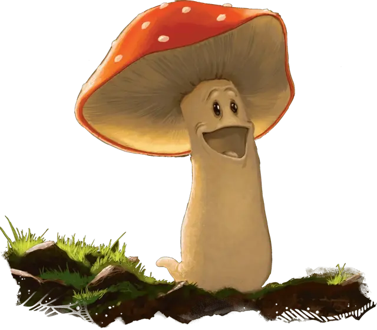

Рой полевиков
Swarm of Campestris
Маленький рой крошечных Растений, без мировоззрения

Класс Доспеха 12 (природный доспех)
Хиты 27 (6к8)
Скорость 5 футов
| мод | спас | ||
|---|---|---|---|
| СИЛ | 3 | −4 | −4 |
| ЛОВ | 7 | −2 | −2 |
| ТЕЛ | 10 | +0 | +0 |
| мод | спас | ||
|---|---|---|---|
| ИНТ | 4 | −3 | −3 |
| МДР | 10 | +0 | +0 |
| ХАР | 8 | −1 | −1 |
Навыки Восприятие +4
Сопротивление урону дробящий, колющий, рубящий
Иммунитет к состояниям захват, окаменение, опутанность, очарование, ошеломление, паралич, сбивание с ног
Чувства пассивное Восприятие 14, чувство вибрации 30 футов
Языки Общий
Опасность 1 (200 опыта)
Бонус мастерства +2
Особенности
Языки. Понимает Общий, но говорит только с помощью особенности Подражание.
Подражание. Каждый полевик в рое может подражать любому голосу или мелодии, которую он уже слышал, но назальным фальцетом.
Рой. Рой может занимать пространство другого существа, и наоборот, и рой может перемещаться через любой проход, достаточный для одного полевика. Рой не может восстанавливать хиты и получать временные хиты.
Действия
Удар головами. . Рукопашная атака оружием: +0 к попаданию, досягаемость 5 фт., одна цель. Попадание: 10 (4к4) дробящего урона, или 5 (2к4) дробящего урона, если у роя половина хитов или меньше.
Споры (1/день). Рой испускает споры в 20-футовом радиусе вокруг себя. Эти споры могут огибать углы, и не оказывают эффекта на конструктов, элементалей, растений или нежить. Каждое существо в этой области должно совершить спасбросок Мудрости Сл 10. При провале существо становится недееспособным и его скорость уменьшается наполовину, оба эффекта длятся 1 минуту. Существо может повторять спасбросок в конце каждого своего хода, завершая эффекты на себе в случае успеха.
Описание
Полевики — беспечные грибоподобные существа, которые ни о чём не заботятся и не переживают. Они буквально очарованы музыкой, хотя и не способны отличить прекрасное выступление от посредственного. Если кто-то поблизости от полевика начнёт петь или играть на музыкальном инструменте, эти маленькие создания будут счастливы подпеть, каждый неблагозвучным назальным фальцетом, прыгая и танцуя вокруг музыканта.
Полевики легко подражают лирике и музыке. Если полевик разучит песню или часть мелодии три или четыре раза, он запомнит её навсегда.
Полевики встречаются самых разных цветов, от белого до загара тёмного цвета, но у них всегда красные или пурпурные шляпки, покрытые пятнышками. Полевики передвигаются управляя миццелием, который произрастает из их ножки, и поддерживает их. Грибные создания питаются солёной землёй, фильтруя соль, и оставляют после себя липкую массу очищенной почвы (конечно, выедая питательные для грибов вещества). Поедание соли — механизм защиты, поскольку это делает полевиков солёными и неприятными на вкус для большинства существ, хотя жаболюды считают их деликатесом.